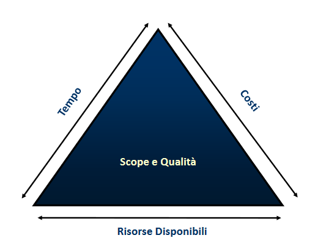

Definizione di Progetto
Project Management Body of Knowledge
PMBOK è uno standard per la professione del PM e fornisce le linee guida per gestire singoli progetti (non in modo uniforme a tutti i progetti). Identifica il sottoinsieme del corpo di conoscenze del project management generalmente riconosciuto come buona prassi. Fornisce inoltre un vocabolario comune. Non è uno standard esaustivo, ma solo un riferimento di base.
Definizione di progetto
PMBOK: Iniziativa temporanea (inizio e fine definiti) per creare un prodotto, un servizio o un altro risultato con caratteristiche di unicità.
La fine del progetto si raggiunge quando (una delle seguenti):
- Sono stati raggiunti gli obiettivi
- Non è più possibile raggiungere gli obiettivi
- Non sussiste più l'esigenza del progetto
L'unicità del risultato differenzia un progetto da un'attività operativa, che è invece un processo ripetitivo.
Wysocki: Sequenza unica, complessa e connessa di attività che hanno un goal e che devono essere completate rispettando le specifiche e i vincoli di tempo e di budget.
Il risultato finale però potrebbe non soddisfare il cliente, perciò si introduce il concetto di business value, ovvero il valore percepito dal destinatario. Perciò, alla definizione di Wysocki si può aggiungere che il risultato del progetto deve fornire il business value atteso.
Cosa può produrre un progetto?
- Un prodotto o un suo componente
- Un servizio o un suo prerequisito
- Un processo aziendale
- Una versione migliorata dei precedenti
- Conoscenza (progetti di ricerca)
Definizione di Programma
Insieme di progetti correlati e gestiti in modo coordinato per ottenere benefici ultreriori rispetto alla gestione individuale di progetti. Ciascun progetto è una componente del risultato finale del programma.
Il program management consiste nella gestione centrallizzata e coordinata del programma con l'obiettivo di raggiungere benefici strategici.
Definizione di Portfolio
Nel caso più progetti siano legati solo dalla condivisione di un cliente, fornitore, tecnologia o risorsa si parla di Portfolio. I progetti di un portfolio non devono necessariamente essere correlati o dipendenti.
Pianificazione strategica
I progetti servono a realizzare il piano strategico di un'organizzazione. Possibili motivazioni per un progetto:
- Richiesta del mercato
- Esigenze aziendali
- Commissione di un cliente
- Soluzione di problemi
Scope del progetto
Definisce i confini del progetto in termini di ciò che deve essere fatto e di ciò che NON deve essere fatto. Quando si parla di software tipicamente coincide con le specifiche funzionali. Va definito prima di iniziare l'implementazione al fine di garantire l'integrità concettuale. Strettamente legato al concetto di Conditions of satisfaction. Lo scope di un progetto può cambiare nel tempo.
Qualità
- Qualità del prodotto: riferita al deliverable del progetto.
- Qualità del processo: riferita al processo di gestione del progetto.
La corretta gestione della qualità consente di garantire la soddisfazione del cliente e di usare le risorse in modo efficace ed efficiente.
Scope Triangle

È un sistema in equilibrio, dove le lunghezze dei lati corrispondono alle quantità di risorse disponibili e limitano lo scope e la qualità del progetto. Modificare le variabili potrebbe portare il sistema a non essere in equilibrio.
- Project Impact Statement: stabilisce come affrontare le possibili modifiche di scope richieste dal cliente.
- Problem Escalation Strategy: stabilisce la strategia con cui affrontare la soluzione dei problemi.
Problem Escalation Strategy
Who owns what? Rispondere a questa domanda permette di individuare il percorso di risoluzione dei problemi.
Responsabilità:
- cliente e senior management: controllo di tempo, budget e risorse;
- team di progetto: conoscenza di come vengono usati tempo budget e risorse.
Passi:
- PM trova una soluzione nei vincoli di tempo/budget
- PM chiede di riallocare le risorse
- PM ricontatta il cliente per rinegoziare budget, tempo e/o risorse
Creeps
Cambiamenti insidiosi e impercettibili che si possono riscontrare in un progetto e che sono spesso dovuti al team stesso.
- Scope creep: cambiamento rispetto al piano originario, potrebbe non essere dovuto al team o al cliente, ma semplicemente a necessità di mercato.
- Hope creep: un membro del team nasconde il fatto di essere in ritardo e fa finta di nulla, convinto di poter recuperare.
- Effort creep: un membro del team non ha una produttività adeguata e non ottiene il giusto progresso.
- Feature creep: un membro del team aggiunge funzionalità non concordate credendole utili; siccome ciò che non è concordato non verrà sicuramente riconosciuto e potrebbe essere addirittura dannoso, è necessario richiedere l'autorizzazione, seguendo il giusto iter e interpellando il PM, l'architect e il cliente.
Classificazione dei progetti
Applicare lo stesso approccio a tutti i progetti è dannoso alla loro riuscita. L'approccio va definito in base alla caratteristiche del progetto, ed è quindi necessaria una classificazione.
Classificazione per:
- Dimensione: costi, durata, ...
- Applicazione: sviluppo sw, svilupoo nuovo prodotto, ...
- Tipo: nuovo, manutenzione, aggiornamento, strategico, ...
- Complessità
- Incertezza
- Rischio
- Business value
- Durata
- ...
Created: May 19, 2022 14:33:37